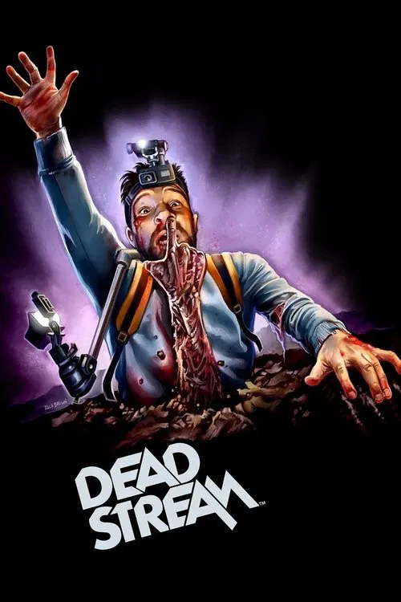
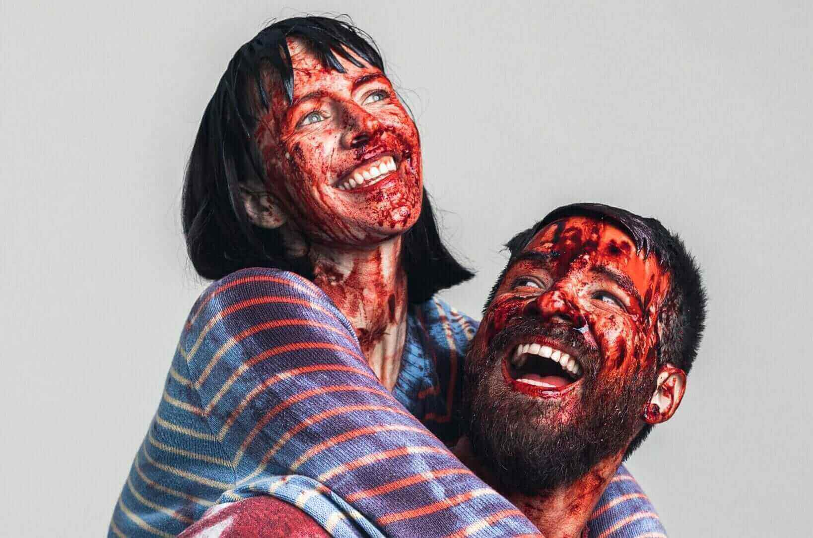
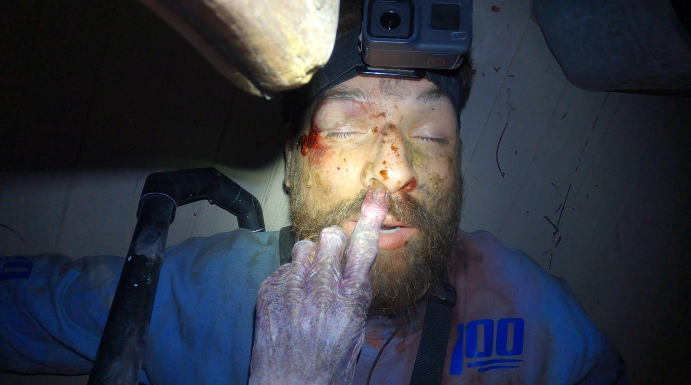

Ein gecancelter YouTuber, ein Spukhaus und eine Kamera
Stellt euch vor, ein gecancelter YouTuber sperrt sich freiwillig über Nacht in ein verfallenes Spukhaus ein, wirft den Schlüssel in einen Gully und streamt das Ganze live, nur um seine verlorenen Follower zurückzugewinnen. Klingt nach einer ziemlich dummen Idee? Ist es auch. Und genau deshalb funktioniert Deadstream so verdammt gut.
Gesehen habe ich den Film erstmals auf dem Fantasy Filmfest 2022 und er galt bereits im Vorfeld als Geheimtipp. Nun war das Festival fast vorbei, ich hatte über 30 Filme in einer Woche hinter mir und nun war er endlich an der Reihe. Die noch vorhandene Energie war niedrig, die Erwartung groß, und dann begann die wilde Achterbahnfahrt, die Deadstream werden sollte. Und was soll ich sagen: rausgekommen bin ich mit Muskelkater vom Lachen und einer ehrlichen Gänsehaut. Lasst mich erklären, warum.
Worum geht's?
Shawn Ruddy ist die Sorte Internet-Persönlichkeit, die man eigentlich nicht mögen will: ein Stunt-Influencer, der nach einem entgleisten Video seine Sponsoren und den Großteil seiner Fans verloren hat. Sein Comeback-Plan? Eine Nacht allein in "Death Manor", einem berüchtigten Haus, in dem schon mehrere Menschen gestorben sein sollen. Damit er bloß nicht kneift, baut er sich selbst jeden Fluchtweg ab und überträgt alles live, inklusive eingeblendetem Chat, der das Geschehen kommentiert.
Dass das Haus tatsächlich nicht ganz leer ist, ahnt man natürlich von der ersten Minute an. Mehr verrate ich nicht. Der Spaß liegt darin, sich überraschen zu lassen.
Die Form: Found Footage, aber clever
Found Footage ist ja inzwischen ein bisschen totgeritten, aber Deadstream macht etwas Schlaues daraus. Statt der klassischen Wackelkamera kriegen wir einen waschechten Livestream samt Kamera-Harness, fest installierten Cams und eben diesem Chat. Letzterer ist der eigentliche Geniestreich: Die Zuschauer-Kommentare treiben die Handlung mit voran, kommentieren, warnen, hetzen und spiegeln gleichzeitig, wie wir selbst gerade als Publikum zugucken. Und man hat eben nicht wie bei vielen anderen Found-Footage-Filmen den Hintergedanken: "Warum nehmt ihr eigentlich immer noch auf?"
Joseph Winter trägt den ganzen Laden
Und zwar wortwörtlich. Es ist im Grunde eine One-Man-Show. Joseph Winter (der auch mit seiner Frau Vanessa Regie führte, das Drehbuch schrieb und schnitt) ist fast die komplette Laufzeit allein im Bild. Das hätte furchtbar anstrengend werden können. Wird es aber nicht, weil er sich mit einer Hingabe in die Rolle wirft, die man selten sieht. Sein Shawn ist gleichzeitig nervig, feige, eitel und irgendwie trotzdem mitreißend. Man will, dass er die Klappe hält, und feiert ihn im nächsten Moment. Dass der Kamera-Helm die ganze Zeit auf seinem Kopf saß und er für eine einzige Effektszene laut den Winters stundenlang in einer wassergefüllten Wanne ausharren musste, sagt eigentlich alles über sein Commitment.
Außerdem sei an dieser Stelle noch die grandiose Leistung von Melanie Stone erwähnt. Sie geht wunderbar in ihrer Rolle auf und gibt Chrissy eine großartige manische Energie. Die Winters haben sie beim Verfassen des Drehbuchs auch schon im Hinterkopf gehabt, sie sind jahrelange Freunde.

Horror oder Comedy? Beides, gleichzeitig
Das ist für mich die größte Herausforderung vieler Horror-Comedys: Meistens leidet eine der beiden Seiten. Deadstream schafft den Spagat erstaunlich oft. Der Humor entsteht organisch aus Shawns panischen Reaktionen, und kaum hat man sich entspannt, kommt der nächste Schreckmoment. Die Effekte sind handgemacht und sichtbar Low-Budget, aber genau das verleiht dem Ganzen einen charmanten, ruppigen Charakter.
Mehr als nur Klamauk
Was mich überrascht hat: Unter dem ganzen Geschrei steckt tatsächlich eine Idee. Deadstream ist eine ziemlich bissige Satire auf die Influencer-Kultur: auf Selbstinszenierung, auf die Gier nach Aufmerksamkeit und darauf, wie Leute selbst ihre Reue noch zu Content verwursten. Shawn kuratiert die ganze Zeit ein Bild von sich, und der Film stellt genüsslich die Frage, was davon eigentlich echt ist. Das ist nicht subtil, aber es trifft.
Interessant ist, dass das gar nicht so weit hergeholt ist: Die Winters haben in Interviews erzählt, dass Shawns kontroverse Vergangenheit von realen Influencer-Skandalen jener Zeit inspiriert wurde, darunter der große PewDiePie-Aufreger. Und sie geben offen zu, dass sie beim Recherchieren über echte Vlogger anfingen, deren Talent und Anziehungskraft tatsächlich zu respektieren. Genau diese Ambivalenz, die Figur soll abstoßend und sehenswert sein, steckt mit drin und erklärt, warum Shawn nie zur reinen Karikatur verkommt.

Hinter den Kulissen
Was mich nach ein paar Interviews mit dem Regie-Duo endgültig überzeugt hat: Die Entstehungsgeschichte ist fast so unterhaltsam wie der Film selbst.
Die Grundidee kam Joseph Winter angeblich, als er ein Nickerchen machen wollte: ein Kamera-Helm, ein Spukhaus, alle Geister nur als Geräusch im Off. Vanessas Reaktion darauf war ehrlich: eine richtig schlechte Filmidee. Erst als die beiden mehr Kameras, mehr Tempo und, ihren Worten nach, einen explodierenden Kopf dazudachten, sprang sie an Bord. Der scheinbar spontane, lockere Plauderton von Shawn ist übrigens kein Improvisationszufall, sondern minutiös durchgeschriebenes Drehbuch, das sie in unzähligen Fassungen auf "wirkt spontan" getrimmt haben.
Mein Lieblingsdetail: Das Haus ist echt und in seiner Gegend tatsächlich gefürchtet. Die Winters erzählen, dass Jugendliche dort ständig einbrachen und dass sogar ein herbeigerufener Polizist sich weigerte, das Gebäude zu betreten, weil er als Kind die Spukgeschichten verinnerlicht hatte. Auch der Bauarbeiter, den sie für die Verstärkung der Wände engagierten, schwor, als Teenager eine Frau in einem der Fenster gesehen zu haben. Das verfallene Gebäude mussten sie mit rund 15 Helfern über Wochen entrümpeln und das obere Stockwerk teils neu aufbauen. Man spürt diese gelebte Atmosphäre im fertigen Film.
Und die Kreaturen? Bewusst handgemacht. Statt sich hinter der typischen Found-Footage-Dunkelheit zu verstecken, wollten die Winters die Monster ihres Designers Troy Larson gut sichtbar und mit einer fast verspielten Persönlichkeit zeigen, inspiriert von den praktischen Effekten der 80er, etwa aus House, Creepshow oder The Gate. Genau dieser liebevolle Old-School-Ansatz ist es, der dem Film sein Herz gibt.
Fazit
Deadstream ist ein chaotischer, kreativer Found-Footage-Spaß, der mehr Hirn hat, als er auf den ersten Blick zugibt. Wenn ihr Horror-Comedys mögt und mit einer absichtlich anstrengenden Hauptfigur leben könnt, solltet ihr unbedingt reinschauen. Für komplette Genre-Muffel ist es vermutlich nichts, dafür ist es zu laut und zu albern. Mich hat's gekriegt.
Meine Wertung: 9/10. Ein Geheimtipp für die nächste Halloween-Nacht.
Ähnliche Filme
Wem Deadstream gefallen hat, dem empfehle ich: The Medium (2021), Tucker and Dale vs Evil (2010) und Army of Darkness (1992).
Weitere Reviews